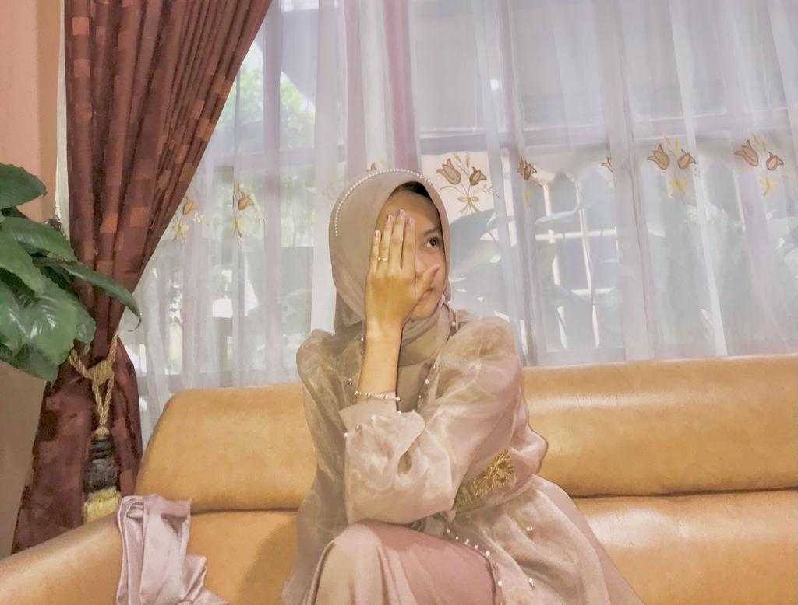

Perkenalkan nama saya RENA TSANIYAH HERIZKA. saya anak ke-2. Saya lahir di Ranah ,17 Desember 2006. Saya tinggal di Bukit Ranah. Saya memulai pendidikan TK di TK Melati. Dan saya SMP di SMP 1 Kampar. Dan setelah tamat saya melanjutkan di SMKN 1 BANGKINANG. Hobby saya adalah nonton drakor. Warna favorite saya adalah pink. Dan makanan&minuman kesukaan saya adalah mie & jus.
jangan ditekan